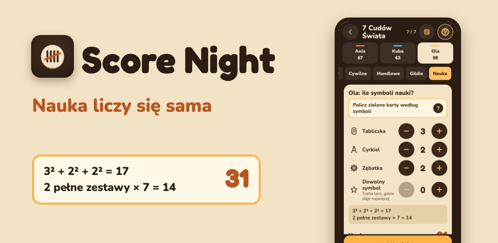

Score Night
Wpisz to, co leży na stole — Score Night sam policzy punkty w grze planszowej.
- 7 Cudów Świata: nauka liczy się sama
- Wsiąść do Pociągu, Na skrzydłach, Carcassonne, Munchkin
- Mafia: pomocnik prowadzącego z zabawnymi historiami
- Każda gra ma własne narzędzia liczenia
- Remisy według zasady samej gry
- 2 pełne partie za darmo w każdej grze · Bez konta
Score Night to nieoficjalna aplikacja, niezwiązana z wydawcami tych gier. Nazwy gier należą do ich właścicieli.